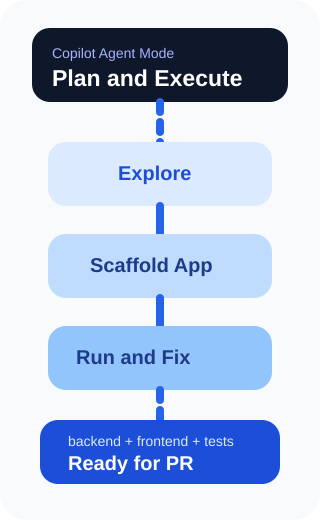
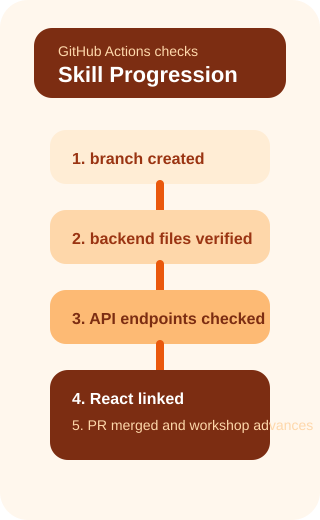

이 실습에서 배우는 것
자율적 다단계 코딩으로 풀스택 앱 빌드
재사용 가능한 프롬프트로 팀 워크플로우 표준화
백엔드 REST API 구축 및 테스트
Bootstrap 기반 UI와 API 연동
 Copilot Agent 모드 — 자율적 AI 개발자
Copilot Agent 모드 — 자율적 AI 개발자
Agent 모드는 처음부터 앱을 만들고, 여러 파일에 걸쳐 리팩터링하며, 테스트를 작성·실행하고, 레거시 코드를 마이그레이션할 수 있습니다.
Agent 모드의 핵심 동작
- 관련 파일과 컨텍스트를 자율적으로 탐색
- 코드 변경과 터미널 명령을 함께 실행
- 오류를 감지하고 자동 복구 루프 실행
- 민감한 작업은 Continue 버튼으로 승인 게이트
- LLM 모델을 자유롭게 변경하여 다른 결과 비교

 프로젝트 스캐폴딩 — Agent로 구조 잡기
프로젝트 스캐폴딩 — Agent로 구조 잡기
디렉토리 구조부터 의존성 설치까지 한 번에
OctoFit Tracker는 고등학교 체육 수업용 피트니스 추적 앱입니다. Agent 모드가 전체 구조를 잡아줍니다.
Agent가 수행하는 작업
octofit-tracker/backend&frontend디렉토리 생성- Python 가상 환경 설정 및 활성화
requirements.txt작성 및 패키지 설치- MongoDB 데이터베이스 구조 초기화
자동으로 생성하고 의존성을 설치합니다.
프롬프트 예시
 프롬프트 파일 & 커스텀 인스트럭션
프롬프트 파일 & 커스텀 인스트럭션
반복 가능한 AI 가이드 워크플로우
커스텀 인스트럭션 (.instructions.md)
Copilot이 코드를 생성할 때 참조하는 규칙 파일입니다. 프로젝트 구조, API 패턴, 코딩 표준을 정의합니다.
프롬프트 파일 (.prompt.md)
채팅에서 직접 실행 가능한 재사용 프롬프트입니다. 슬래시 명령처럼 호출할 수 있습니다.
.github/instructions/에 프로젝트별 규칙 정의.github/prompts/에 실행 가능한 작업 정의- 팀원들과 일관된 AI 워크플로우 공유
mode: 'agent'로 자동 Agent 모드 실행
 Django 백엔드 & REST API
Django 백엔드 & REST API
MongoDB + Django REST Framework으로 API 구축
Agent 모드로 Django 프로젝트를 구성하고, MongoDB에 데이터를 채우고, REST API를 설정합니다.
구축하는 API 엔드포인트
/api/users/— 사용자 관리/api/teams/— 팀 구성/api/activities/— 활동 기록/api/leaderboard/— 리더보드/api/workouts/— 운동 기록
populate_db.py 관리 명령으로MongoDB에 테스트 데이터를 자동 생성합니다.
프로젝트 구조
 React 프론트엔드 & PR 리뷰
React 프론트엔드 & PR 리뷰
Bootstrap UI 구축부터 Copilot PR 리뷰까지
React 프론트엔드
Agent 모드로 React 앱을 생성하고 Bootstrap으로 스타일링합니다. 각 컴포넌트가 백엔드 REST API와 연동됩니다.
- App.js — 네비게이션과 라우팅 (react-router-dom)
- 컴포넌트별 API fetch & 데이터 표시
- Bootstrap 테이블·카드·버튼 스타일링
PR에서 Copilot
- PR 설명 자동 요약 생성
- Copilot 코드 리뷰 — 일반적 실수 탐지
- 리뷰 후 머지로 실습 완료
build-octofit-app → main PR을 만들고,Copilot 요약 & 리뷰 후 병합합니다.
 GitHub Actions — 실습의 비밀
GitHub Actions — 실습의 비밀
뒤에서 자동으로 돌아가는 검증 시스템
이 실습은 GitHub Actions를 사용해 여러분의 진행을 자동으로 확인합니다.
동작 원리
- 1단계: 브랜치 생성 → create 이벤트 →
build-octofit-app확인 - 2단계: 코드 푸시 → push 이벤트 →
requirements.txt확인 - 3단계: Django 설정 → push 이벤트 → 모델·뷰 파일 확인
- 4단계: REST API → push 이벤트 → URL 엔드포인트 확인
- 5단계: React → push 이벤트 → 컴포넌트 API 연동 확인
- 6단계: PR 병합 → pull_request closed → merged 확인

 핵심 정리
핵심 정리
자율적 다단계 코딩 — 프로젝트 생성부터 테스트까지
재사용 가능한 AI 워크플로우 표준화
REST API 구축 및 데이터베이스 자동 설정
Bootstrap UI와 백엔드 API 연동
Copilot으로 PR 요약 생성 & 자동 리뷰